| ・修論発表リハーサル (H23.02.17) | |||
今年はM脇くん、K野くん、Hさんの順で発表します。それぞれの個性がプレゼンに反映されるものですね。 発表が終わるまでFの部屋はこのままなので、好きな時間に練習できます。 |
|||
|
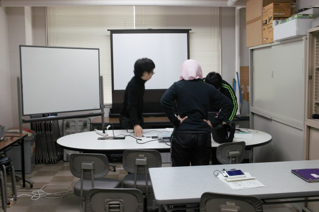
準備中 |
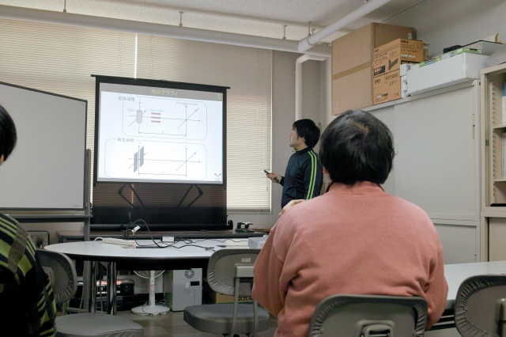
M脇くんからスタート | ||
|
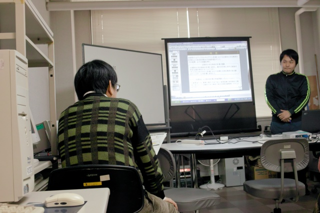
村田先生からのキビシイ質問 |
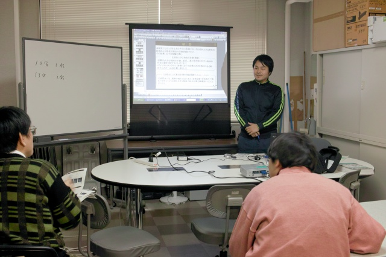
いやいやここはどうなってるの？ | ||
|
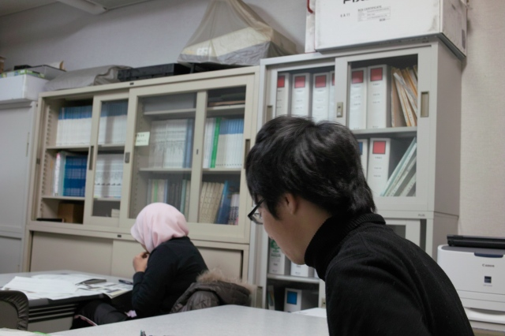
K野くん質問中、密かにHさん発表練習中 |
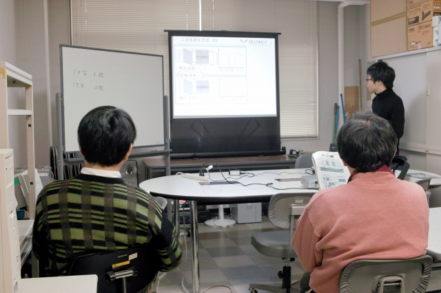
次はK野くん | ||
|
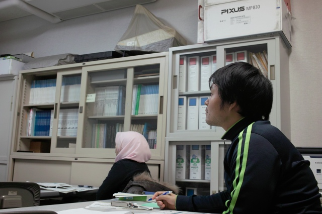
M脇くんメモ中、Hさん練習休憩中 |
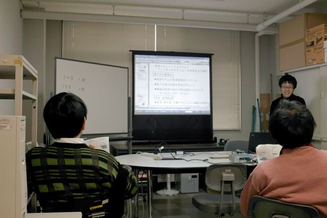
えへ、詰め込みすぎました！ | ||
|
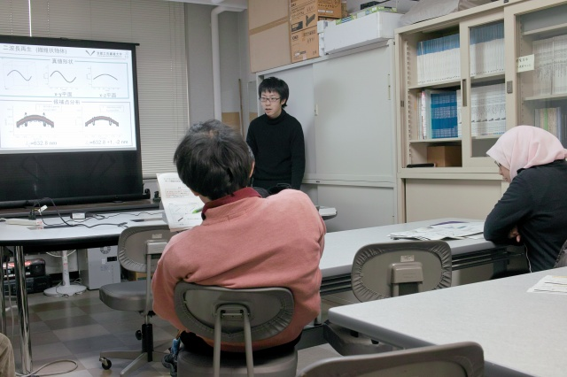
Y名田先輩のキビシイ質問 |
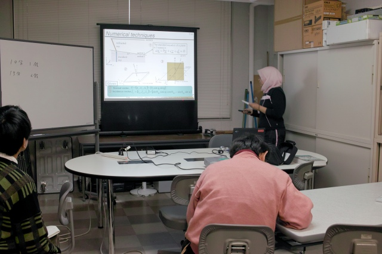
元気いっぱいHさん | ||
|
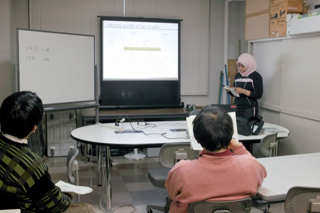
あれ、どこのコトだっけ？ |
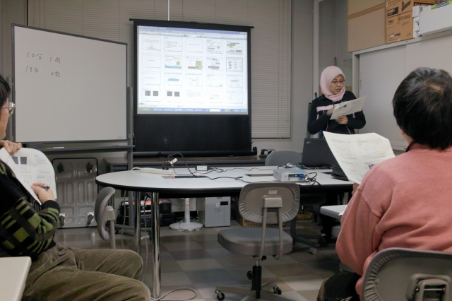
ここのコトですよ | ||